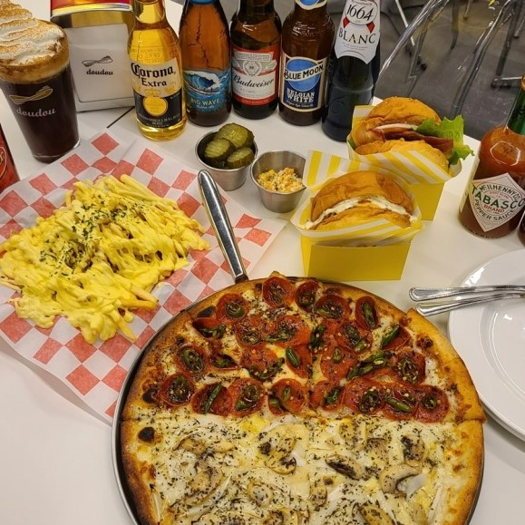

인스타 갬성 RG? 감성 있는 맛집 best5
"맛에 취하고 분위기에 취한다"
1. MOONLIGHT
강원 춘천시 애막골길3번길 39 1층 MOON LIGHT
음식 맛집, 분위기 맛집! 모던한 인테리어가 돋보이는 유니크한 감성, 힙한 느낌의 펍. 이제 낮에도 즐기실 수 있습니다.
2. CAFE C
강원 춘천시 세실로 114 1층
카페 분위기와 인테리어가 돋보이는 감성 카페
르뱅쿠키, 크림라떼, 흑임자라떼 등등 맛까지 있다?!
넓은 주차장이 준비되어 있고 10kg 미만의 소형 반려동물 출입이 가능합니다.
3. 디저트갤러리
강원 춘천시 서부대성로227번길 3 2층
그림이 걸려있는 갤러리 느낌의 카페
포토존까지 준비되어있어 인스타 인생샷 건지기? 완전 가능
다양한 디저트가 있는 숨겨진 디저트 맛집입니다.
4. DISTILLED
강원 춘천시 공지로252번길 12 1층
시그니처 음료와 디저트, 포토존이 가득한 카페입니다.
다양한 메뉴가 있는 조용조용한 빈티지 갬성 카페

5. 도우도우
강원 춘천시 우석로85번길 9-17 1층
48시간 이상 숙성된 도우를 쓰는 피자를 맛볼 수 있습니다.
사장님의 인테리어 감각이 느껴지는 내부와 맛있는 피자까지 한번에 즐길 수 있는 맛집